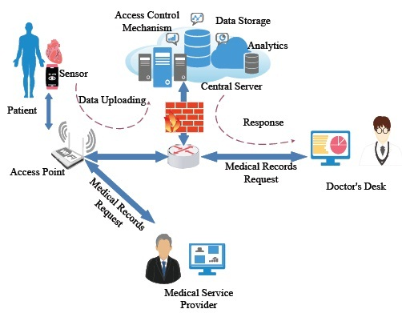

The rapid developments in the Internet of medical things (IoMT) help the smart healthcare systems to deliver more sophisticated real-time services. At the same time, IoMT also raises many privacy and security issues. Also, the heterogeneous nature of these devices makes it challenging to develop a common security standard solution. Furthermore, existing cloudcentric IoMT healthcare systems depend on cloud computing for electrical health records (EHR) and medical services, which is not suggestible for a decentralized IoMT healthcare systems. In this paper, we have proposed a Blockchain-based novel architecture that provides a decentralized EHR and smart-contract based service automation without compromising with the system security and privacy. In this architecture, we have introduced the hybrid computing paradigm with blockchain-based Distributed Data Storage System (DDSS) to overcome blockchain-based cloudcentric IoMT healthcare system drawbacks like high latency, high storage cost and single point of failure. A decentralized Selective Ring based Access Control (SRAC) mechanism is introduced along with device authentication and patient records anonymity algorithms to improve the proposed systems security capabilities. We have evaluated the latency and cost effectiveness of data sharing on proposed system using Blockchain. Also, we conducted a logical system analysis, which reveals that our architecture based security and privacy mechanisms are capable of fulfilling the requirements of decentralized IoMT smart healthcare systems. Experimental analysis proves that our Fortified-Chain based H-CPS needs insignificant storage and has a response time in the order of milliseconds as compared to traditional centralized H-CPS while providing decentralized automated access control, security, and privacy..
Fortified-Chain: A Blockchain Based Framework for Security and Privacy Assured Internet of Medical Things with Effective Access Control

Concepts
- Internet of medical things (IoMT),
- Healthcare Cyber-Physical System (H-CPS),
- Blockchain, Mutual Authentication,
- Access Control,
- Privacy, Distributed Data Storage System
- (DDSS),
- Hybrid Computing